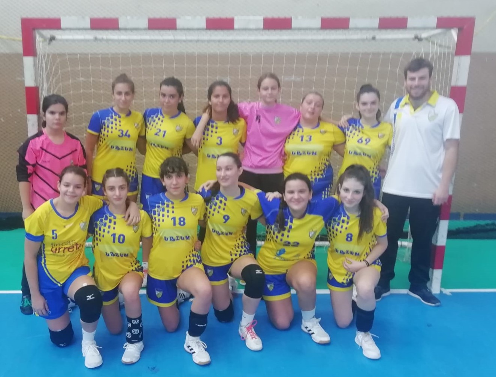

Aste honetako jardunaldia
2022ko urriaren 30a
| Talde | Aurkaria | Tokia | Eguna | Data | Ordua | Mailak |
|---|---|---|---|---|---|---|
| Urola Laztimendi | Soraluce BKE | Bergara | Larunbata | 29 | 16:00 | 1.Lurraldeko Senior Gizonezkoa |
| Urola Construcciones Antio | La Salle Legazpi | Zumarraga | Larunbata | 29 | 17:00 | 1.Lurraldeko Senior Neskak |
| Urola Cristaleria Gohierri | Hettich ZKE | Zarautz | Larunbata | 29 | 13:00 | Jubenil Mutilak |
| Urola Alai Hortz Klinika | Bacalaos Hondarribia | Zumarraga | Larunbata | 29 | 11:00 | Jubenil Mutilak |
| Urola A.Aranzadi | Egia Indaux | Donostia / San Sebastian | Larunbata | 29 | 18:00 | Cadete Mutilak |
Hona hemen aurreko asteko kronikak.
1. LURRALDEKO GIZONEZKOAK
CB UROLA EK LAZTIMENDIren garaipena Aritzbatalde Taberna ZKEren aurka, etxekoen defentsa sendo batean oinarritua. Hala eta guztiz ere, horiak erasoan eginiko okerrek berdintasunari eutsi zion lehen zatian. Zortzina atsedenaldian.
Bigarren erdian, ordea, Inixiok entrenatutakoek defentsa-irmotasunari eutsi zioten eta erasoko prestazioak hobetu zituzten, eta asmatze-ehuneko handia lortu zuten, eta horrek hautsi egin zuen partida. Amaierako 27 eta 15an, ondo baino hobeto islatzen da bigarren aldi horretan gertatutakoa.
Datorren astean, Saiekoren kantxa bisitatuko dugu Donostian, ligaren hasiera honetan talde lehiakorrenetakoa.
UROLA EK LAZTIMENDI, 27 - ARITZBATALDE TABERNA ZKE, 15
JUBENIL GIZONEZKOAK
Beste garaipen eroso bat CB UROLA EK CRISTALERÍA GOIHERRI taldearentzat. Gureak, hasieratik amaierara nagusitu ziren. Markagailuan hainbesteko aldearekin, zaila da kontzentrazioari eustea eta jaurtiketa-akatsak egin zituzten, saihestu zitezkeen galera batzuk, defentsan lasaitu ziren… Datorren astean, derbia Legazpin. EUTSI MUTILAK!
UROLA EK CRISTALERÍA GOIHERRI, 38 - BACALAOS SANTYMAR HONDARRIBIA, 18

KADETE GIZONEZKOAK
CB UROLA EK ANTONIO ARANZADI taldeko mutilek ondo jokatutako partida. Estu hartu zuten bigarren urteko eta partida guztiak 12 gol baino gehiagotik irabazten ari den taldea. Lanean jarraitzen dugu.
UROLA EK ANTONIO ARANZADI, 22 - AMENABAR A ZKE, 26
KADETE EMAKUMEZKOAK
Trebakuntza-talde batean garrantzitsuena ikasten bada, CB UROLA Urzum neskak ondo ari dira: 20 x 40an kokalekua; paseak, harrerak; defentsa-jarrera… hobetuz doaz Neskek erakusten duten grina eta handinahia nabarmentzeko da, asko laguntzen baitu esku hartzen eta hobetzen. GORA NESKAK!

UROLA Urzum, 11 - JESUITAK DURANGO, 25